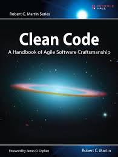

|  |
| The Clean Coder |
| Uncle Bob� Martin definitely raises the bar with his latest book. He explains his expectation for a professional programmer on management interactions, time management, pressure, on collaboration, and on the choice of tools to use. Beyond TDD and ATDD, Martin explains what every programmer who considers him- or herself a professional not only needs to know, but also needs to follow in order to make the young profession of software development grow.� |